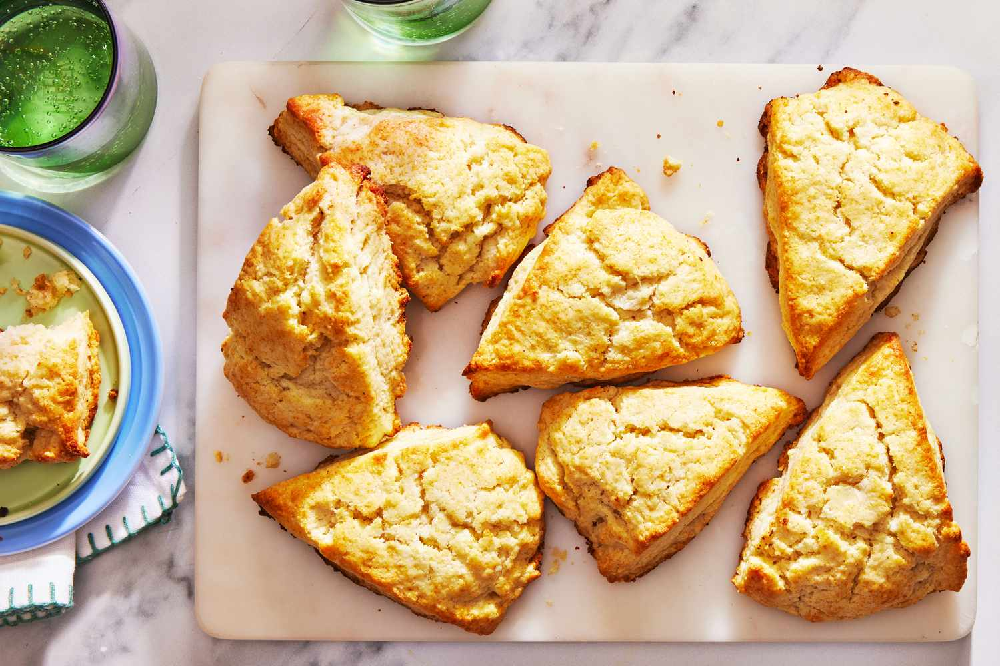

Scones

Description
Simple scones.
Ingredients
- Flour
- Sugar
- Baking powder
- Salt
- Butter
- Milk
- Egg
Steps
- Mix the dry ingredients, then work the butter into the dough using two knives or a pastry blender.
- Whisk the milk and egg togerther, then stir the egg mixture into the flour mixture.
- Transfer the dough to a floured surface and knead briefly.
- Pat or roll the dough into a round and cut into triangles using a knife or a bench scraper.
- Bake the scones in a preheated oven until golden brown
Home